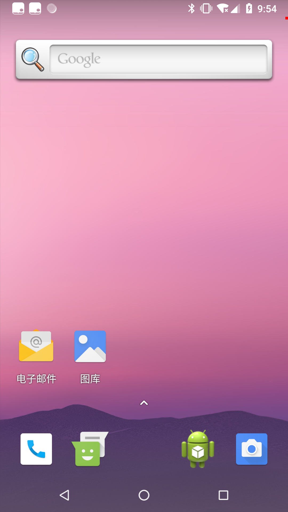

之前通过WindowManager添加一像素的View来进行进程保活，虽然不会显示在最近任务列表中，也不会响应主页键和后退键，但是进程的oom_adj值4，且在灭屏后，进程还会被系统给清理掉，通过一像素的窗口保活也有其适用范围。那么网上说的一像素Activity可不可以试试呢？有时间也不妨试试。
实现OnePixelActivity
- 来看看
OnePixelActivity的代码：1
2
3
4
5
6
7
8
9
10
11
12
13
14
15
16
17
18
19
20
21
22
23
24public class OnePixelActivity extends Activity {
private static final int WINDOW_SIZE = BuildConfig.DEBUG ? 10 : 1;
private static final int WINDOW_COLOR = BuildConfig.DEBUG ? Color.RED : Color.TRANSPARENT;
@Override
protected void onCreate(Bundle savedInstanceState) {
super.onCreate(savedInstanceState);
setContentView(R.layout.activity_one_pixel);
WindowManager.LayoutParams attributes = getWindow().getAttributes();
attributes.dimAmount = 0.0f;
attributes.x = 0;
attributes.y = 0;
attributes.width = WINDOW_SIZE;
attributes.height = WINDOW_SIZE;
attributes.gravity = Gravity.TOP | Gravity.END;
getWindow().setAttributes(attributes);
getWindow().getDecorView().setBackgroundColor(WINDOW_COLOR);
getWindow().setFlags(WindowManager.LayoutParams.FLAG_NOT_TOUCHABLE,
WindowManager.LayoutParams.FLAG_NOT_TOUCHABLE);
}
}
这里先通过OnePixelActivity大小和背景色区分调试模式，其次将OnePixelActivity放置在右上角，最后设置OnePixelActivity不响应触摸。不过现在启动它还不是1像素大小。
- 现在需要设置主题样式才能让
OnePixelActivity显示成1像素大小：1
2
3
4
5<activity
android:name=".OnePixelActivity"
android:configChanges="orientation|keyboard|screenSize"
android:launchMode="singleInstance"
android:theme="@style/OnePixelTheme" />
启动模式设置为单例模式。OnePixelTheme定义如下：1
2
3
4
5
6
7
8<resources>
<style name="OnePixelTheme" parent="android:Theme.Dialog">
<item name="android:windowCloseOnTouchOutside">false</item>
<item name="android:windowNoTitle">true</item>
<item name="android:windowIsFloating">true</item>
<item name="android:windowIsTranslucent">true</item>
</style>
</resources>
OnePixelActivity已经实现好了，现在只需要在合适的地方启动它就可以了：
1 | public class MainActivity extends AppCompatActivity { |
如果顺利的话可以看到如下效果：

查看oom_adj的值也为0。
启动时机
虽然1像素Activity可以呈现出来了，但是还有以下问题：
Activity启动后会在最近任务列表中出现；Activity在清理最近任务时会被清理掉；Activity会响应Back和Home键；其它
Activity启动时，1像素Activity会退到后台，或者被销毁。
因此1像素Activity无法长期保留在前台，正确的启动时机才能起到保活的作用，所以常见的做法是在灭屏时启动1像素Activity，在亮屏时再退出。
灭屏启动
可以监听灭屏广播来启动OnePixelActivity，将灭屏广播静态注册到AndroidManifest.xml文件中：1
2
3
4
5
6
7
8<receiver
android:name=".ScreenOffReceiver"
android:enabled="true"
android:exported="true">
<intent-filter>
<action android:name="android.intent.action.SCREEN_OFF" />
</intent-filter>
</receiver>
然后再ScreenOffReceiver中启动OnePixelActivity：1
2
3
4
5
6
7
8
9
10public class ScreenOffReceiver extends BroadcastReceiver {
@Override
public void onReceive(Context context, Intent intent) {
String action = intent.getAction();
if (Intent.ACTION_SCREEN_OFF.equalsIgnoreCase(action)) {
context.startActivity(new Intent(context, OnePixelActivity.class));
}
}
}
本以为在灭屏时可以启动OnePixelActivity，但是并没有如愿以偿，因为：
Beginning with Android 8.0 (API level 26), the system imposes additional restrictions on manifest-declared receivers. If your app targets API level 26 or higher, you cannot use the manifest to declare a receiver for most implicit broadcasts (broadcasts that do not target your app specifically).
动态注册广播启动
所以要在后台Service的代码中动态注册灭屏广播接收器：1
2
3
4
5
6
7
8
9
10
11
12
13
14
15
16
17
18
19
20
21
22
23
24
25
26
27
28
29
30
31
32
33
34
35
36
37
38
39public class ScreenOffService extends Service {
@Override
public IBinder onBind(Intent intent) {
// TODO: Return the communication channel to the service.
throw new UnsupportedOperationException("Not yet implemented");
}
@Override
public void onCreate() {
super.onCreate();
registerReceiver();
}
private void registerReceiver() {
IntentFilter filter = new IntentFilter();
filter.addAction(Intent.ACTION_SCREEN_OFF);
registerReceiver(mScreenStateReceiver, filter);
}
private BroadcastReceiver mScreenStateReceiver = new BroadcastReceiver() {
@Override
public void onReceive(Context context, Intent intent) {
if (Intent.ACTION_SCREEN_OFF.equalsIgnoreCase(intent.getAction())) {
startActivity(new Intent(context, OnePixelActivity.class));
}
}
};
@Override
public void onDestroy() {
super.onDestroy();
unregisterReceiver();
}
private void unregisterReceiver() {
unregisterReceiver(mScreenStateReceiver);
}
}
亮屏退出
亮屏时关闭OnePixelActivity。通过动态注册亮屏广播，当收到广播时关闭OnePixelActivity：
1 | public class OnePixelActivity extends Activity { |
如果ROM厂商没有把亮灭屏广播给禁止的话，就可以正常工作的。灭屏后，通过adb命令可以查看oom_adj值为0。通过提升进程的oom_adj值来保活进程的目的基本达到了，但是各系统厂商和Android版本更新会带来各种变数。
总结
通过1像素Activity来保活进程，需要亮屏时进程还在运行，才能接收到灭屏广播，并启动1像素Activity，再到亮屏时关闭它。Android进程保活之路对于我来说还很漫长，毕竟平时我开发Android应用基本不需要保活(系统特权)，没准儿哪天需要在ActivityManagerService中通过判断Activity的大小来清理流氓进程。要消灭它，就要先了解它。
参考文档
[1] 实现谣传QQ中的手段——“1像素页面保活”
[2] 非全屏Activity实现，以及触摸消息的处理
[3] 安卓8.0静态注册广播不能用的问题